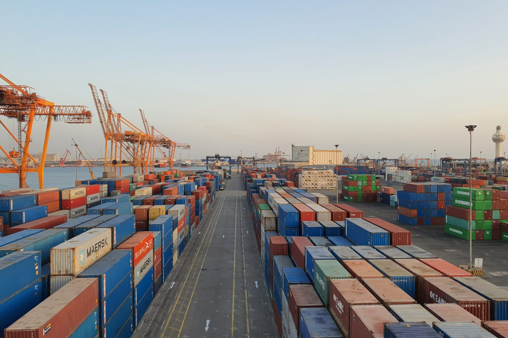

Container Yard Pre-Marshalling Optimization
In a container yard or a steel stockyard, the box you need next is often buried under boxes you need later. Digging it out costs a rehandle every time. This computes, in advance, the shortest sequence of moves that re-sorts the stacks so those rehandles never happen. The industry calls the re-sorting pre-marshalling; we solve it with reinforcement learning.
Where this applies
Anywhere goods are stacked several tiers high and taken out one at a time, the same problem shows up, whatever the size of the site.



Photographs illustrate the setting. They are not Hannune project sites.
The problem it solves
Container terminals and steel stockyards store goods in stacks, several tiers high. When the order they are stacked in does not match the order they will leave in, an item that leaves early ends up underneath one that leaves late.
Getting to it means lifting the item on top and putting it somewhere else first. That move is a rehandle, and rehandles are pure cost: crane time spent moving something nobody asked for. Terminals already shift containers during quiet hours to avoid them, which is where the term housekeeping comes from.
This program takes the current state of a bay and computes the move sequence that ends with every stack in retrieval order, using as few moves as it can find. It runs before retrieval starts, not during it.
The method is a re-implementation based on two granted patents held by the inventor, Taeho Kim, founder of Hannune Inc. A neural network scores how good a state is, and a search procedure follows that score to pick the move order.
Measured results
These numbers come from running this program. We have not verified that the solutions are optimal, and we have not yet compared them against the published benchmark instances. What is shown is the behaviour of a model trained to reduce rehandles and move counts.
| Problem | Size | Worst-case layout (fixed evaluation state) | 20 random layouts (beam search) |
|---|---|---|---|
| Container terminal | 8 stacks x 5 tiers, 32 containers, all with distinct retrieval order | 34 moves | All 20 solved, 24.1 moves on average |
| Steel stockyard | 8 stacks x 4 tiers, 24 plates | 15 moves | All 20 solved, 10.7 moves on average |
Measured over 20 random layouts.
Demo
Pick a problem (container yard or steel stockyard) and a layout, then step through the computed move sequence one move at a time.
Patents behind it
This program is a re-implementation based on the methods in two granted patents, inventor Taeho Kim.
How we work on it
Pricing is not published. These are the ways we take this on.
Custom build
Built against your terminal operating system or yard management data.
Proof of concept
Run it on your own yard data first and see what the move count does.
Joint research
Participation in port and logistics research projects or joint ventures.
Enquiries: contact@hannune.ai